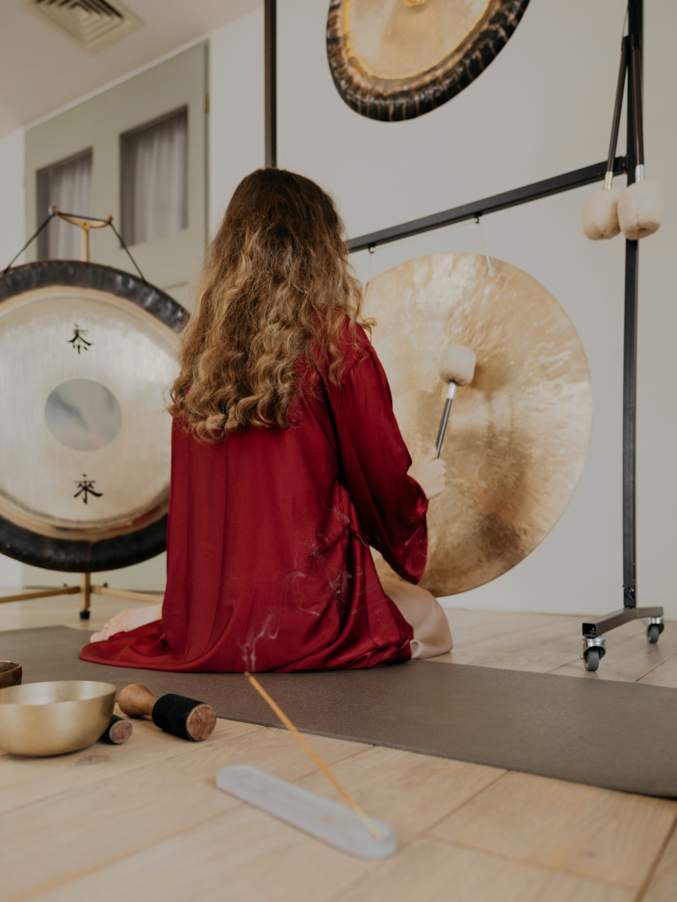

стоимость: 3.000р
групповые gong bath практики
Глубокое погружение в пространство звука, тишины и совместного присутствия.
Групповые практики помогают замедлиться, снять внутреннее напряжение и мягко вернуться в контакт с собой через вибрации гонга и медитативное состояние.
Это пространство, где можно отпустить контроль, восстановить внутренний ресурс и прожить опыт глубокой перезагрузки в поддерживающем поле группы.
вместе мы сильнее